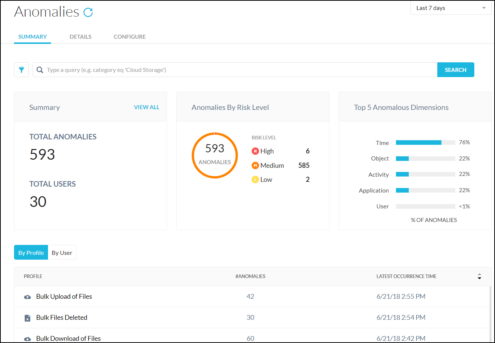

Anomalies
Anomalies provide automated detection of abnormal app usage patterns. The Anomalies page provides information about the various types of detected anomalies. Use the Anomalies dashboard to address some common use cases, such as:
Detect employees that are preparing to switch companies and start bulk downloading data from the cloud.
Receive a warning when a hacker is exfiltrating data into the cloud storage app you sanctioned.
Analyze proximity events, like when a user-account is compromised and actively being abused.
Detect the total number of files in a zip file and populate the data in the Events.
Important
Netskope is enabling general availability of Behavior Analytics and this page will be deprecated soon.
Please move your anomalies configurations to Policies > Behavior Analytics and use Incidents > Behavior Analytics.
To access the Anomalies page, go to Incidents > Anomalies.
|  |
There are three Anomalies pages:
Summary: Shows total anomalies, anomalies by risk level, and anomalous dimensions (percentage per category). There are also tables that show anomalies per profiles and users.
Details: Shows more specifics about anomalies, like risk level, user, profile, description, dimension, and timestamp. This page allows you to acknowledged all or specific anomalies.
Configure: Allows you to enable or disable the tracking of specific anomaly profiles, plus allows you to configure how certain anomalies are monitored.
The Summary and Details pages have these common components:
A query field to search for specific types of anomalies.
Filters only anomalies for a particular risk level, all or just new anomalies, or anomalies based on a specific profile. Profile types include:
Unusual usage
User behavior
Shared credentials
Data Exfiltration
Bulk file uploads
Bulk file deletions
Bulk file downloads
Failed logins
Rare events
Risky countries
Proximity events
The Configure page allows you to enable and configure how anomalies data is shown.
Summary
The Report page shows high-level information about anomalies on the top of the page, and profiles and users information on separate tabs below the high-level information.
Select the Profiles tab to view the number of anomalies detected for each type, along with the latest timestamp. Only the profiles for anomalies detected are shown.
Select the Users tab to view how many anomalies each user has, along with the risk level distribution. Click on an item to open the Details page for specific information about profiles or users.
To export the Users dashboard information to a spreadsheet, click Export CSV.
Details
The Details page provides more granular information about each anomaly:
Risk level
User email address
Profile type
Description
Dimension
Timestamp
Click on an item to view detailed risk, application, and user information. Click the link to the SkopeIT page for more details about each incident. To export the Details page information to a spreadsheet, click Export CSV. To remove one or more of the anomalies, enable the checkbox next to an item and click Acknowledge, or click Acknowledge All.
Configure
The Configure page allows you to specify how profiles are used. Profiles include:
Applications: Click the Global Configure button to access. Configure the specific applications for which you want to perform anomaly detection. This enables you to focus on high value applications to monitor more closely and detect anomalies.
Proximity Event: Configure the distance (in miles) between two locations, or time (in hours), for when the location change happens. In addition, you can allowlist trusted network locations, allowing you to identify your trusted networks and fine tune the proximity anomaly detection.
Rare Event: Configure a time period for a rare event in number of days.
Risky Countries: Configure countries that are in regions that are considered high risk.
Failed Logins: Configure count of failed login and the time interval.
Bulk Download of Files: Configure count of files downloaded and the time interval.
Bulk Upload of Files: Configure count of files uploaded and the time interval.
Bulk Files Deleted: Configure count of files deleted and the time interval.
Data Exfiltration: Enable or disable transfer or retrieval of data from a computer or server.
Shared Credentials: Configure allowing or disallowing shared credentials based on time intervals.
To configure a profile, click the pencil  icon in the Configure column. To configure the applications, click Select Applications. Click Apply Changes to save your configurations.
icon in the Configure column. To configure the applications, click Select Applications. Click Apply Changes to save your configurations.
For example, for Failed Logins, you can specify the number of failed attempts within a certain time range.
Not all profiles are configurable, and the settings for each vary. Here are the descriptions for each of the profiles:
Profile Name | Profile Type | Configurable | Configurable Attributes | Default Value |
|---|---|---|---|---|
Application | Rule-based | Yes | On, select applications | On |
Proximity Event | Rule-based | Yes | On/Off, speed multiplier, select trusted network locations | On |
Rare Event | Rule-based | Yes | On/Off, time period (Days) | On |
Risky Countries | Rule-based | Yes | On/Off, select risky countries to monitor for anomalies | On |
Failed Logins | Rule-based | Yes | On/Off, failed login count in a time interval | On |
Bulk Download of Files | Rule-based | Yes | On/Off, files downloaded in a time interval | On |
Bulk Upload of Files | Rule-based | Yes | On/Off, files uploaded in a time interval | On |
Bulk Files Deleted | Rule-based | Yes | On/Off, files deleted in a time interval | On |
Data Exfiltration | Rule-based | No | On/Off | On |
Shared Credentials | Rule-based | Yes | On/Off and time interval | On |